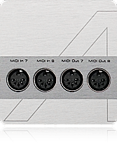
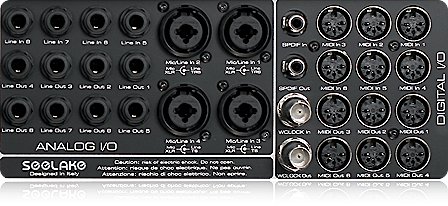
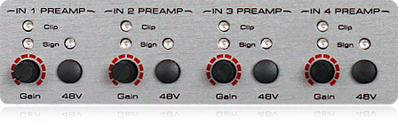

Perfettamente equipaggiata e configurata per registrare voci, strumenti e parti MIDI, AudioStation può essere utilizzata anche come Digital Audio Workstation per la produzione e la registrazione audio digitale multi-traccia e per la post produzione audio.
Infatti, l’integrazione di una potente CPU, di numerosi ingressi ed uscite audio e MIDI, mic preamp ed un sistema operativo appositamente costruito ed ottimizzato per l’elaborazione dei segnali audio, compatibile con tutte le applicazioni musicali, consentono di utilizzarla anche come Digital Audio Workstation per lo studio.
E' sufficiente installare il software preferito a scelta tra Pro Tools, Cubase, Nuendo, Sonar, Wavelab, Sound Forge, Live o altri, senza bisogno di dispositivi hardware aggiuntivi e complicate procedure di configurazione e/o ottimizzazione del sistema. Addirittura, i plug-in installati per le esibizioni dal vivo possono essere utilizzati anche con il software di registrazione e/o editing audio e viceversa, senza bisogno di reinstallarli nuovamente.
Le apposite prese consento di collegare tastiera, mouse, uno o due monitor video con risoluzione fino a 1920x1200 pixel, e perfino hard disk esterni di tipo USB 1.1, 2.0 e 3.
La presenza di 10 I/O audio consente di registrare simultaneamente su tracce separate più strumenti o voci e, addirittura, una intera batteria acustica.
Attraverso gli 8 I/O MIDI è possibile collegare una o più master keyboard e numerosi altri apparecchi MIDI esterni da utilizzare nei propri progetti.
Front panel
Rear panel

I 4 preamplificatori microfonici realizzati con circuiti di alta qualità, gain di oltre 60 dB, signal e clip LED, alimentazione phantom a 48V indipendente, consentono di utilizzare indistintamente microfoni di tipo dinamico e a condensatore.
